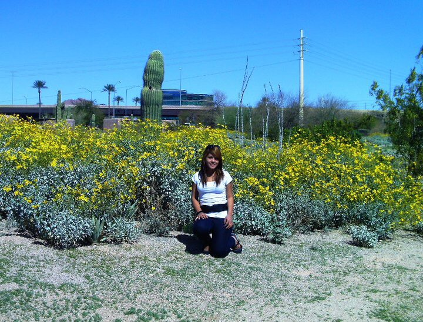

by Carmen Jimenez on 11/1/2016

Agriculture is Life
While golf courses are a luxury, the agriculture is essential in everyday life. Agriculture varies by location, but Arizona, specifically produces cotton, citrus, lettuce, alfalfa and other crops. The crops bring in a $2.4 billion profit to Arizona each year, which is a substantial number and helps support the efficient water usage for agriculture. At the same time, it uses approximately 70% of Arizona's water, and the majority of this water is used for irrigation.
Ranches and farmers use water to irrigate fields and crops and for livestock to drink. In addition, according to Shaun McKinnon, writer and journalist at The Arizona Republic, ranchers, farmers and other members of the agribusiness industry maintain and control reservoirs that comprise Arizona's backup water supply that could be converted for other uses in times of severe drought. Large-scale farming could not provide food for the world's large populations without the irrigation of crop fields by water gotten from rivers, lakes and wells. Without irrigation, crops could never be grown in the desert of Arizona. There are several different systems that are used for irrigation purposes, including ditch irrigation, terracing, overhead irrigation, lateral move irrigation, drip or tickle irrigation and center pivot irrigation. (Source: Agricultural Uses)
The water shortage in Arizona is a real problem barely acknowledged by residents, golf courses, and construction companies which not only inadvertently send water down drains, but also do nothing to help preserve it. Still, Arizona farmers are working steadily towards reducing their water usage. In contract to golf companies, the agricultural industry provides a means to all other industries to thrive simply ways such as food for restaurants and grocery stores and employment for residents.
Through the efforts of legislation, advancement in agricultural efficiency, and the steps taken by individual farmers, use of water resources in Arizona agriculture is already dropping. Agriculture also provides the framework for an emergency drought system in the form of water reservoirs maintained by ranches and farmers. Arizona truly cannot afford to lose this valuable asset to its economy, and agriculture should not be expected to cut back on its water usage any further.